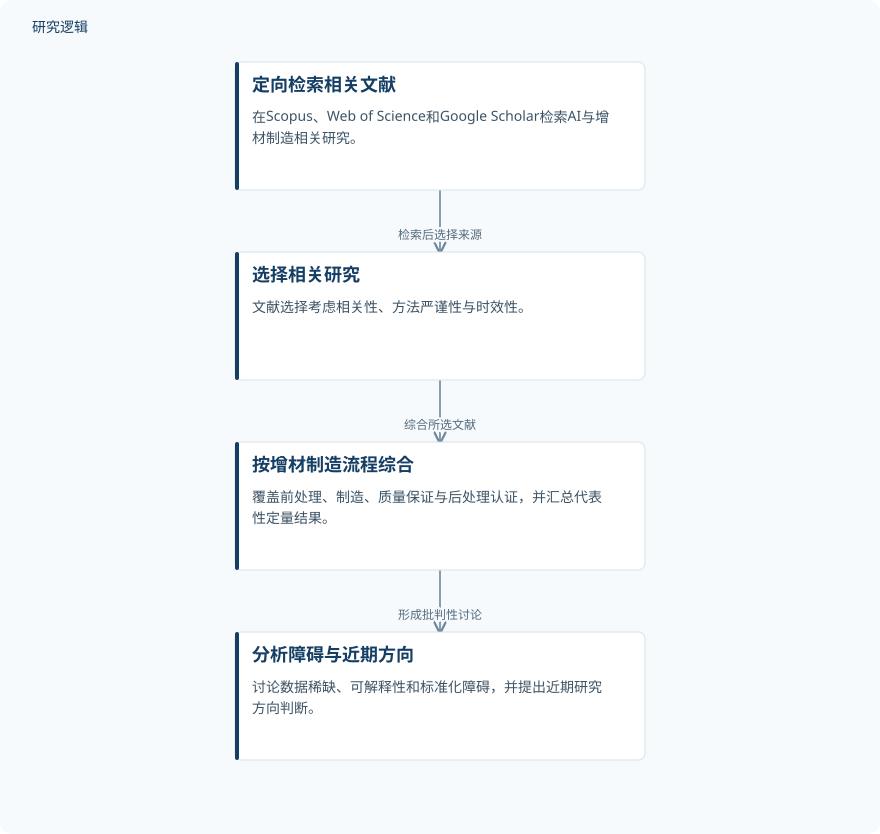

摘要解读
增材制造中的人工智能：方法、应用与工业挑战的批判性综述
Artificial Intelligence in Additive Manufacturing: A Critical Review of Methods, Applications and Industrial Challenges
解读更新 2026-11-17 10:26 · 依据公开摘要整理，未核验全文细节
增材制造走向工业生产，难点不仅是打印出零件，更是控制过程波动、识别随机缺陷并理解工艺与性能的关系。这篇综述梳理AI在设计、制造、监测和认证中的作用，阅读价值在于把技术应用与工业落地障碍放在同一框架下理解。
文章目录
从快速原型走向生产，难在过程可控
增材制造已从快速原型工具发展为生产技术，但过程变异与随机缺陷仍制约其广泛应用。摘要特别指出，复杂的工艺—组织—性能（PSP）关系极难仅靠传统实验方法建立。AI与机器学习因此被视为重要的数据驱动路径，用于参数优化、实时异常检测和缩短开发周期；这些是综述讨论的应用价值，并非本文新完成的单项实验结果。
以定向检索组织全流程批判性综述
本文定位为批判性综合综述。作者在Scopus、Web of Science和Google Scholar开展定向检索，使用增材制造、机器学习、人工智能、数字孪生、原位监测及具体工艺术语，覆盖2015–2026年文献，重点关注2023–2026年的研究。文献选择考虑相关性、方法严谨性及文献时效性。
综述按增材制造流程组织方法：前处理讨论生成式设计与拓扑优化；制造阶段讨论代理建模、贝叶斯优化和强化学习；质量保证关注基于卷积神经网络的原位监测与传感器融合；后处理认证则讨论AI增强的数字孪生。这是文献梳理框架，不代表作者搭建并验证了一套贯通全流程的系统。
依据摘要整理的综述组织过程


仅概括摘要明确描述的文献检索、选择与综合分析关系，不代表论文原图或已验证的制造系统。
下载 SVG图示关系说明
实线表示相邻阶段的信息流，虚线表示跨阶段联系或反馈。
定向检索相关文献 → 选择相关研究：检索后选择来源；选择相关研究 → 按增材制造流程综合：综合所选文献；按增材制造流程综合 → 分析障碍与近期方向：形成批判性讨论
应用贯穿流程，落地仍受数据与标准制约
摘要报告，综述将文献中的代表性定量结果汇总为比较表，并批判性分析了数据稀缺、模型可解释性和行业统一标准缺失等持续性障碍。不过，摘要没有列出这些定量结果，不能据此给出算法排名、性能增幅或工业收益。
作者将联邦学习、边缘部署推理和可解释AI列为近期最有希望的研究方向，目标是推动自主、自纠正的增材制造系统。这属于综述对发展方向的判断，不等于自主闭环能力已经得到验证。
摘要不足以判断比较的公平性与验证范围
仅凭摘要，无法判断纳入文献数量、各研究样本规模、数据来源与划分方式，也无法确认不同算法是否在相同材料、设备、工艺和评价指标下比较。检索筛选的具体流程、跨设备泛化及工业现场验证范围同样需要进一步查阅正文。这里的边界是摘要未提供相关细节，而不是断言论文没有开展这些分析。
阅读启发：关注设计、监测与认证如何衔接
阅读启发：面向生成式设计，可进一步关注设计与拓扑优化的评价如何联系制造质量及最终性能；面向智能运维，可关注原位异常检测与数字孪生认证之间有哪些信息联系。继续阅读时，值得追问作者如何讨论数据稀缺、可解释性和标准化对这些联系的限制，而不宜将质量监测直接等同于设备故障预测或维护效果验证。
以上为本站阅读启发与建议，不是论文已验证的结论。